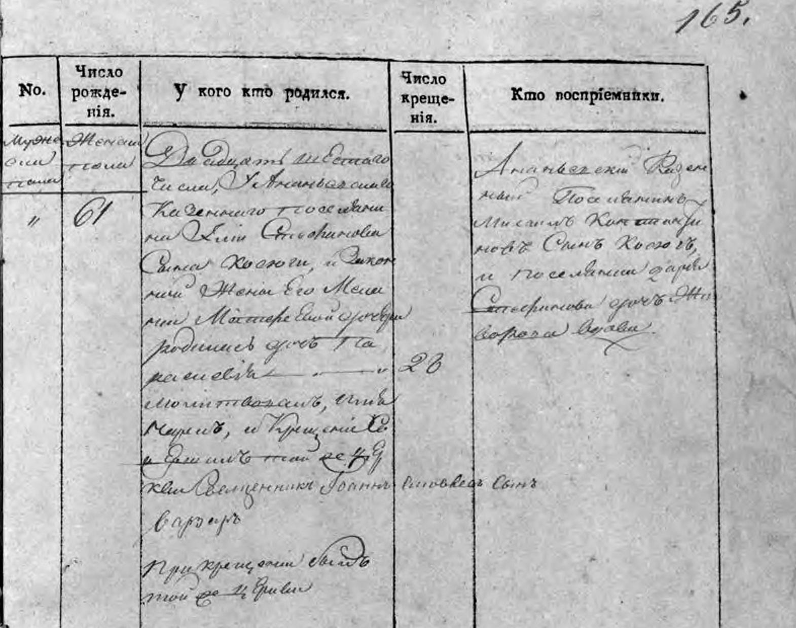

← До родоводуАнаньїв: пошук Луки Рублі та зачіпка по Догах
Друге прочитання (Claude, 18.11.2026): у записі 1831 р., жін. № 61, ім'я батька читається як «Даніи» (тобто, імовірно, Даниїл), а прізвище — не так певно, як «Доги»: перша літера більше схожа на «Х», і прізвище хрещеного Михайла Костянтиновича написане подібно. Порівняно із записом 1824 р. № 6, де «Данила Доги» написано чітко, тут треба ще одне незалежне прочитання. Поки цей запис — лише можлива зачіпка про Дог.
Луку не знайдено. Новий запис 1831 року дає кандидата на брата Тетяни Доги; спорідненість не доведена, ім’я батька потребує звірення.

ДАОО 37/3/390, арк. 165, жін. № 61. Повний розворот · Спірне ім'я батька · Заголовок парафіїАНАНЬЇВ 1829–1831: ПОШУК ЛУКИ РУБЛІ ТА НОВИЙ КАНДИДАТ ІЗ РОДИНИ ДОГ
Перевірено 17.11.2026. Порівняно з GitHub на коміті 12dabf07d898040f151b547909fce32a063c8648.
РЕЗУЛЬТАТ
Народження Луки Кондратовича Рублі в переглянутих народженнях Миколаївської парафії Ананьєва за 1829, 1830 та 1831 роки не впізнано. Пошук виконаний вручну за зображеннями, за ім'ям дитини й батьків; це не повна дипломатична транскрипція всіх записів. Частина тексту вицвіла. Негативний результат не доводить, що людини не було в інших роках, парафіях або копіях.
Знайдено окремий запис про сім'ю Дог. На сайті та в текстових файлах репозиторію згадки цієї пари не виявлено. Неопубліковані нотатки Claude перевірка не охоплює.
ПАРАСКЕВА, ДОЧКА СТЕФАНОВИЧА ДОГИ
ДАОО, ф.37, оп.3, спр.390, Миколаївська церква Ананьєва, 1831. Арк.165, жіночий № 61. Зображення DjVu158, праворуч угорі. Нумерація зображень — від 1; це не номер кадру FamilySearch.
Народилася 26.10.1831 ст.ст. / 07.11.1831 н.ст. Хрещена того самого дня — 26.10 / 07.11. На розвороті нижче починається листопад; жовтень простежено послідовно від попередніх сторінок.
Батько названий ананьївським казенним поселянином, сином Стефана, на прізвище Дога. Ім'я виглядає як «Дани/Даны»: нормалізація «Данило» попередня, не остаточна. У першому повідомленні під час роботи ім'я було назване надто впевнено; тут ступінь певності уточнено.
Мати — Меланія Матвіївна, законна дружина. Дитина — Параскева. Дівоче прізвище матері, вік батьків і їхнє місце народження тут не встановлені.
Робоче читання уривка з нормалізованою орфографією: «…Ананьевского казенного поселянина Дани [Даны?] Стефанова сына Доги и законной жены его Мелании Матвеевой дочери родилась дочь Параскева…». Ім'я не розкривати до «Данило» без знака питання.
ЧОМУ ЦЕ ЗАЧІПКА
У шлюбі 1824 року Тетяна, дружина Кондрата Рублі, прямо названа дочкою Стефана Доги. Новий запис дає дорослого чоловіка Догу з тим самим по батькові в тій самій парафії. Він кандидат на брата Тетяни. Спільні прізвище, по батькові та парафія — підстава перевіряти, а не готовий доказ братерства. Усі Стефани Доги не можуть автоматично вважатися однією людиною.
Ланка Кондрат Рубля × Тетяна Дога → Лука також залишається гіпотезою: їхнього сина Луку в цьому проході не знайдено. Нових людей до доведеного дерева не додано.
Наступний предметний пошук: шлюб цього Стефановича Доги з Меланією до жовтня 1831; його народження та інші діти. Зіставляти зі Стефаном Догою, батьком Тетяни з запису 1801, але не ототожнювати лише за іменем. Рік 1801 для нареченої 1824 також є окремою перевірюваною версією.
ТОЧНИЙ ОБСЯГ ПЕРЕГЛЯДУ
1829 — ДАОО 37/3/364. DjVu155–175, арк.161–180 зв., народження № 1–137. Заголовок на 155, шлюби починаються праворуч на 175. Є сильно вицвілі місця. Повний прохід розділу за шуканою дитиною та батьками; підтвердженого збігу немає.
1830 — ДАОО 37/3/376. DjVu96–121, арк.93–116 зв., народження № 1–145. Зображення 110 і 111 дублюються. Заголовок на 96, шлюби починаються праворуч на 121. № 143 нечіткий, батько читається Андрій; запис не зарахований як збіг із Кондратом.
1831 — ДАОО 37/3/390. DjVu134–162, арк.141–168 зв. У січні–квітні спільна нумерація № 1–41; від травня хлопці й дівчата нумеруються окремо. Наприкінці — чол.№ 59 і жін.№ 73. Заголовок на 134, шлюби починаються праворуч на 162.
У покажчику Вікіджерел до справи 390 вказано 97 за нумерацією FamilySearch. Це число не переносили на DjVu: початок ананьївського розділу в офіційному DjVu встановлено за власним заголовком на 134. Відповідність 97 на FamilySearch окремо не перевірена, тому помилковість самого покажчика не стверджується.
ВІДХИЛЕНІ ЗБІГИ З ІМЕНЕМ ЛУКА
1830: № 129, 24 жовтня, хрещення 26 жовтня, арк.113 зв., DjVu118. Батько Єфрем, мати Анастасія — не Кондрат і Тетяна. Прізвище не транскрибоване як надійно прочитане.
1831: чол.№ 46, 7 жовтня, хрещення 9 жовтня, арк.163, DjVu156. Батько Захарій, мати Єлена — не шукана пара.
1831: чол.№ 49, 18 жовтня, хрещення 20 жовтня, арк.164, DjVu157. Батько читається Гордій, по батькові Яковів, мати Марія — не шукана пара. Повного прізвища тут не встановлюємо.
1829: № 115, DjVu171, є схоже на Луку ім'я; текст вицвілий, упевненого прочитання всіх батьків немає, тому до надійних збігів не включено. У № 56, який на першому перегляді здався Лукою, на збільшенні читається Карп.
ДЖЕРЕЛА Й СКАНИ
1829: https://archive.od.gov.ua/wp-content/old-files/EL_ARH/M/0037/0037_03/0301-0400/0037_03_0364_DAOO.djvu
1830: https://archive.od.gov.ua/wp-content/old-files/EL_ARH/M/0037/0037_03/0301-0400/0037_03_0376_DAOO.djvu
1831: https://archive.od.gov.ua/wp-content/old-files/EL_ARH/M/0037/0037_03/0301-0400/0037_03_0390_DAOO.djvu
Заголовок 1831: research-ananyiv-1831-title.jpg
Повний розворот Дог: research-ananyiv-1831-doga-page.jpg
Збільшення запису: research-ananyiv-1831-doga-detail.jpg
Окреме збільшення спірного імені: research-ananyiv-1831-doga-name.jpg
Кінець народжень 1831: research-ananyiv-1831-end.jpg
Відхилені Луки: research-ananyiv-1830-luka-rejected.jpg, research-ananyiv-1831-luka46-rejected.jpg, research-ananyiv-1831-luka49-rejected.jpg
Попередня перевірка шлюбу 1824: https://opachesnaya-creator.github.io/rodovid/research-gvoz-1824.html